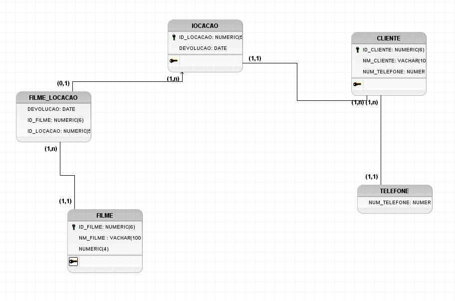
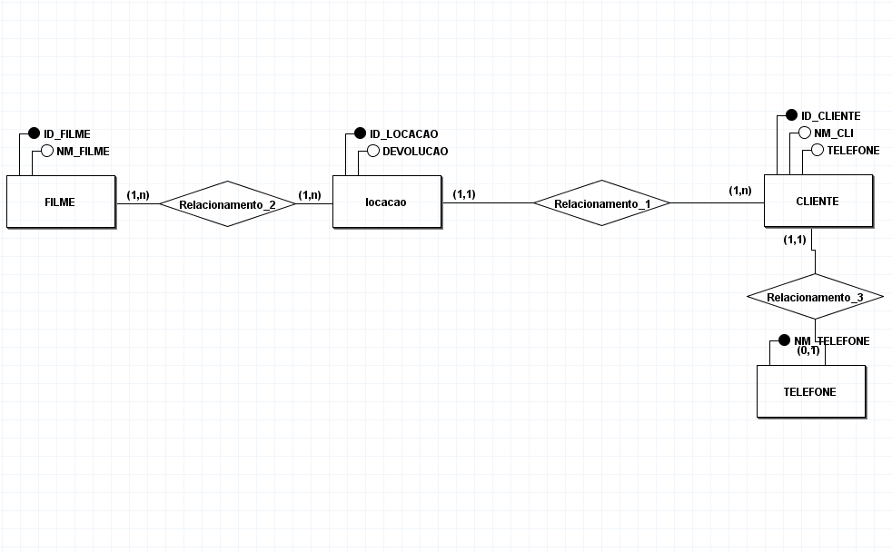

Banco de Dados
Banco de Dados Relacional
Um banco de dados relacional (RDBMS - Relational Database Management System) é um tipo de banco de dados que armazena os dados em tabelas organizadas por colunas e linhas, de forma similar a uma planilha. As tabelas podem ser relacionadas entre si por meio de chaves primárias e estrangeiras.
Exemplos de sistemas de gerenciamento de banco de dados relacionais incluem o MySQL, PostgreSQL, Oracle e SQL Server.
A principal característica dos bancos de dados relacionais é que eles seguem o modelo relacional, que é baseado em teorias matemáticas de conjuntos e álgebra relacional.
Características principais:
Dados organizados em tabelas.
Tabelas podem ser relacionadas entre si.
Utilizam SQL (Structured Query Language) para consultas e manipulação de dados.
Banco de Dados Não Relacional
Um banco de dados não relacional (NoSQL) é uma categoria de sistemas de banco de dados que não utilizam o modelo relacional tradicional. Esses bancos de dados são projetados para lidar com grandes volumes de dados não estruturados ou semi-estruturados, como textos, imagens ou vídeos. Eles são especialmente úteis em cenários de big data e aplicações que exigem alta escalabilidade e flexibilidade.
Exemplos de bancos de dados não relacionais:
MongoDB (documento)
Cassandra (coluna)
Redis (chave-valor)
Neo4j (grafos)
Características principais:
Flexibilidade no modelo de dados.
Escalabilidade horizontal.
Alta performance para grandes volumes de dados.
Não utilizam SQL tradicional, mas APIs específicas para consulta.
Diagrama Conceitual (DER)
Diagrama Entidade-Relacionamento (DER) ou Diagrama Conceitual é uma representação gráfica das entidades de um sistema e os relacionamentos entre elas. O objetivo do DER é capturar a estrutura do banco de dados de forma abstrata, sem se preocupar com detalhes de implementação. As entidades podem ser, por exemplo, "Cliente", "Produto", "Pedido", e os relacionamentos entre elas podem ser "faz um", "pertence a", etc.
Componentes principais do conceitual são :
Entidade
Relacionamento
Atributos
Diagrama Logico (MER)
O diagrama logico pode ser igual ao (DER) porem ele tem mais detalhes e refinado do que o (DER), O (MER) leva em conta as características específicas do banco de dados relacional, como tipos de dados, cardinalidades e chaves.
Componentes Principais são :
Entidade
Relacionamento
Atributos
Cardinalidade
Exemplos de Diagramas DER e MER :


Bancos de Dados que Empresa Trabalha?
MySQL, PostgreSQL, MongoDB e Microsoft SQL Server
O que é um Dicionário de Dados?
O dicionário de dados é um repositório centralizado que descreve os dados que são armazenados em um banco de dados. Ele contém informações detalhadas sobre as entidades, atributos, relacionamentos, tipos de dados, restrições e outras características dos dados. O dicionário de dados é essencial para o gerenciamento de um banco de dados, pois fornece um ponto de referência para desenvolvedores, administradores de banco de dados e analistas. Um dicionário de dados é uma parte fundamental para a organização dos dados